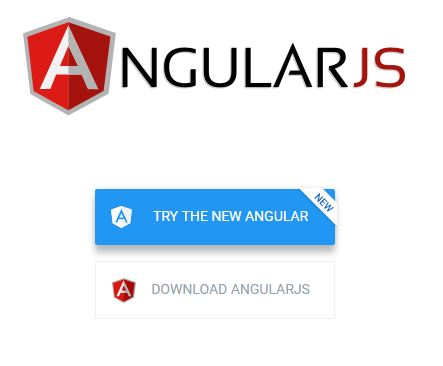
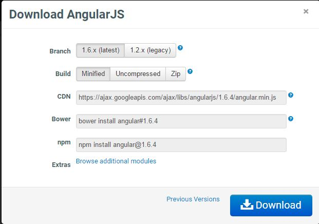

We are very glad to start our journey to the Super-heroic MVW framework, AngularJS, commonly referred to as Angular.
AngularJS is a client-side JavaScript framework developed by Google for adding interactivity to HTML. AngularJS is the best choice, if you want to create a responsive, easy to organize, easily testable and maintainable web application.
We assume that you are very familiar with the following:
If you are not familiar with any of these technologies, we recommend you to learn HTML, JavaScript and CSS before going through the AngularJS tutorials.
The following table illustrates the Core Features of angularJS.
This table briefly mentions the core features of AngularJS framework.
You can download AngularJS from the official web site by following this link Download.
You will see a page similar like this and hit download.
There are two branches available for download. Legacy version, the stable version and Latest version, the unstable version of AngularJS. You can select any of the minified, uncompressed or zipped versions of angular. You can also find the CDN of the latest angular version in the image shown below.
We will go with the stable and minified version of angularJS. Click on the download button and save the file in your folder.
You have to include the downloaded JavaScript file ( angular.min.js ) in the HTML document to use angularJS.
The following HTML shows how to include angular.min.js.
<!doctype html>
<html>
<head>
<script type="text/javascript" src="angular.min.js"></script>
</head>
<body>
</body>
</html>
You can also use the CDN but make sure to check with the angularJS website for the latest version.
<!doctype html>
<html>
<head>
<script type="text/javascript" src="https://ajax.googleapis.com/ajax/libs/angularjs/1.6.4/angular.min.js"></script>
</head>
<body>
</body>
</html>
Now we are going to write our first AngularJS application. We have gone through the following steps to create our first Angular application:
ng-app tells the Angular which part of our document belongs to the angular application.ng-model and ng-bind is to bind the input text value to the specified HTMLangular-helloworld1.html
<!DOCTYPE html>
<html lang="en">
<title>AngularJS First Application</title>
<head>
<script src="https://ajax.googleapis.com/ajax/libs/angularjs/1.2.26/angular.min.js"></script>
</head>
<body>
<div ng-app>
<p>Enter Some text : <input type="text" ng-model="someText"></p>
<p>Hello <span ng-bind="someText"></span>!</p>
</div>
</body>
</html>
The ng-bind directive tells Angular to replace the text of the element with the given value , and it is updated with change in the value of that expression.
Typically, we do not use the ng-bind directive directly in our document. We wrap the model value in double curly braces like {{some-expression}}. The following example demonstrates how the model value is wrapped inside
the double curly braces. You will see the same result in your browser.
angular-helloworld2.html
<!DOCTYPE html>
<html lang="en">
<title>AngularJS First Application</title>
<head>
<script src="https://ajax.googleapis.com/ajax/libs/angularjs/1.2.26/angular.min.js"></script>
</head>
<body>
<div ng-app>
<p>Enter Some text : <input type="text" ng-model="someText"></p>
<p>Hello {{ someText }}!</p>
</div>
</body>
</html>
This is your first angular application. I hope you got a brief idea about the angular directives like ng-app, ng-model and ng-bind. We will give you a detailed explanation of all the core features of angularJS
in this series of angular tutorials